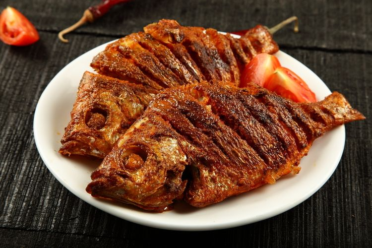

Cara Simpan Seafood Matang di Kulkas agar Rasa Tetap Enak

Sumber :https://www.kompas.com/
Ada kalanya memasak olahan seafood terlalu banyak. Entah itu ikan goreng, sup ikan, atau aneka tumisan cumi dan udang yang tak sempat disantap. Jangan dulu memutuskan untuk membuangnya.
Makanan sisa tersebut masih bisa kamu simpan dan konsumsi di hari lain. “Misalnya kita punya sisa ikan goreng masih ada dua, lebihnya kita buat masak besok itu bisa kita simpan di chiller,” ujar Chef Hotel Santika Cirebon, Aguk Prasetiyo pada Kompas.com, Minggu (7/6/2020).
Caranya sederhana, kamu hanya perlu menyimpan seafood matang di wadah bersih yang kedap udara. Kalau perlu gunakan plastik wrap agar memastikan benar-benar kedap udara. “Bisa disimpan di chiller atau freezer. Kalau disimpan enggak terlalu lama hanya sehari dua hari gitu lebih baik di chiller supaya proses thawing (melumerkan) ketika mau dimasaknya tidak terlalu lama,” jelas Aguk.
Pasalnya, makanan yang sudah diolah dan sudah matang jika terkena udara beku seperti dalam freezer kemungkinan besar akan merusak makanan itu sendiri.“Bisa hilang juice (sari) di dalam ikannya gitu. Istilahnya kalau kita awal makan gurih, nanti ketika sudah dari freezer jadi hambar karena sudah berair kan dari beku es itu,” sambung Aguk.
Jika disimpan di dalam chiller saja dengan suhu yang masih di atas 0 derajat celsius, seafood matang bisa tahan sekitar satu sampai dua hari. Namun semua itu tetap bergantung pada kebersihan wadah yang kamu gunakan serta proses pemasakan yang dilakukan.
Jika proses pemasakan dilakukan dengan benar dan bersih, maka makanan bisa tahan lebih lama lagi. Intinya, pastikan untuk mengecek lebih dahulu kualitas makanan sebelum dipanaskan kembali. Jika baunya sudah tak sedap, lebih baik langsung dibuang saja.
kembali


 Copyright@2020
Copyright@2020